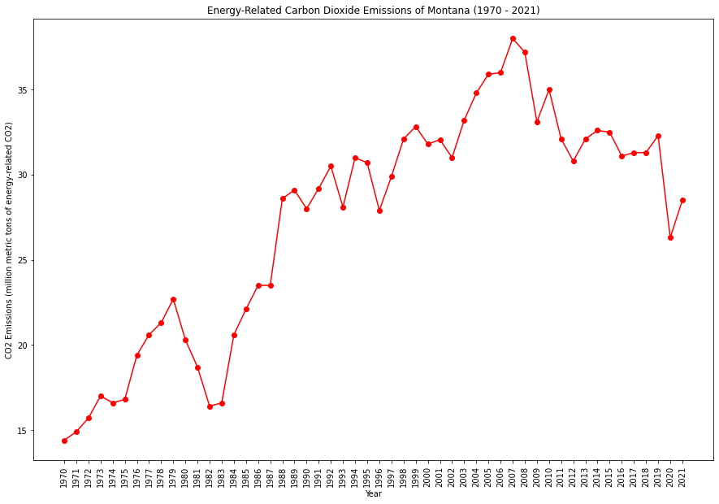
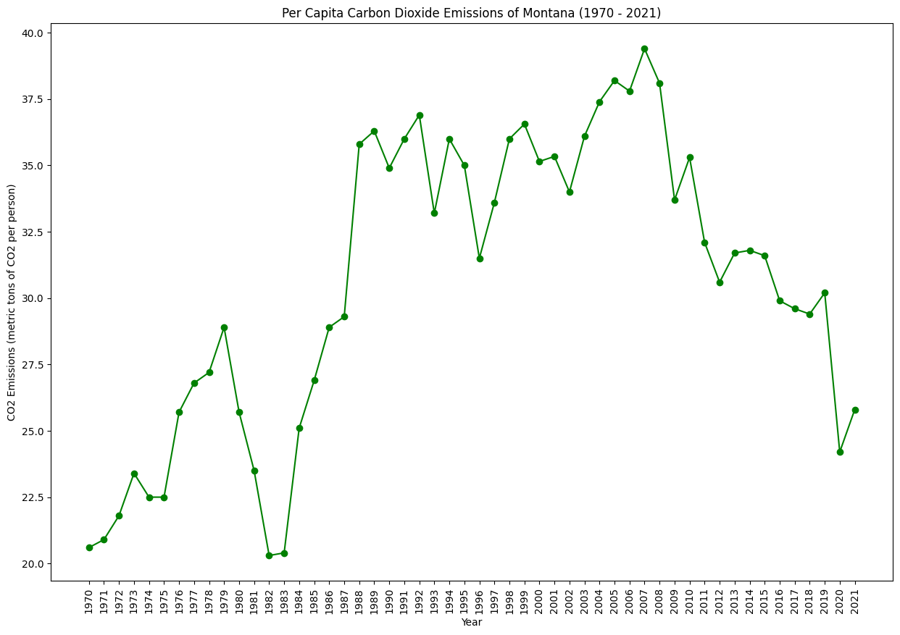
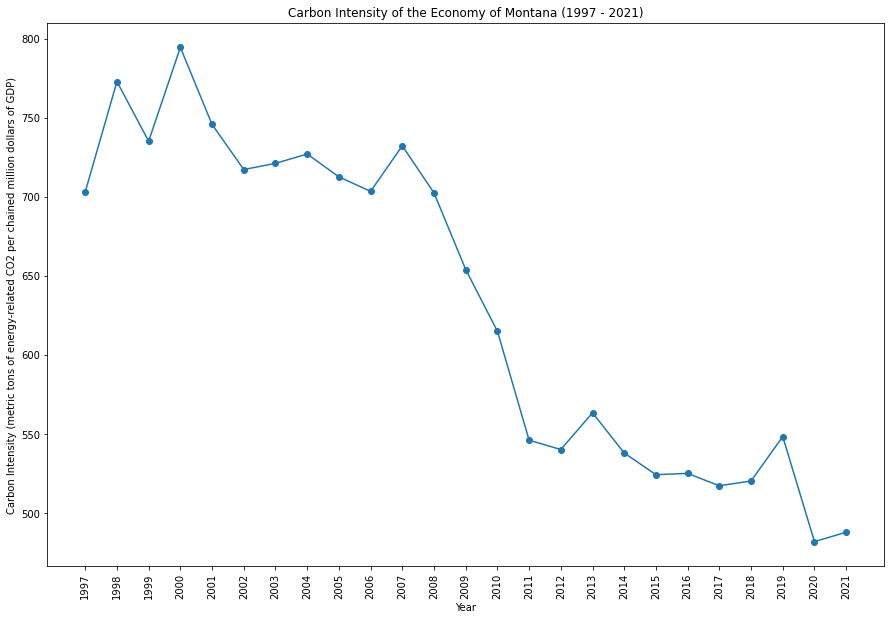
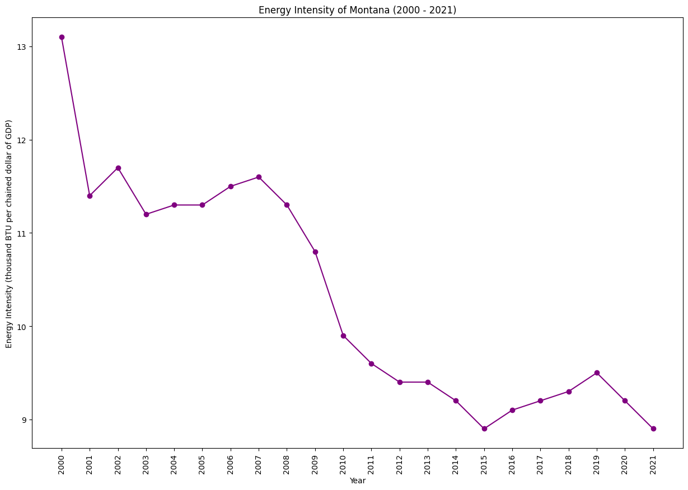

|  |  |
|  |  |
Montana has abundant natural resources, including coal, oil, and natural gas. The state is working on balancing traditional energy sources with renewables, such as wind and hydropower. Challenges include addressing environmental impacts from resource extraction while promoting sustainable practices.